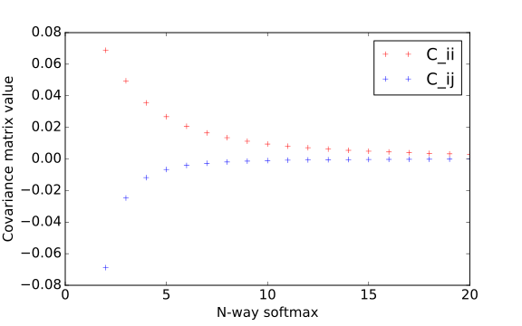

Normalization in Neural Networks
Guangrun Wang, Shuai Li, Tong Xiao, Shuang Li
Why Need Normalization?
Many layers with non-linear functions are stacked.

Without normalization
With normalization
Batch Normalization
Motivation
Suppose you want to learn \(p(y | x)\), if \(p(x)\) changes from batch to batch, then it would be very hard to learn.
Batch Normalization
Solution
- \(\mu_B \gets \frac{1}{m} \sum_{i=1}^m x_i\)
- \(\sigma_B^2 \gets \frac{1}{m} \sum_{i=1}^m (x_i-\mu_B)^2\)
- \(\hat{x}_i \gets \frac{x_i-\mu_B}{\sqrt{\sigma_B^2+\epsilon}}\)
- \(y_i \gets \gamma \hat{x}_i + \beta\)
\(\mu_B\) and \(\sigma_B\) are not constant! They are involved in BP.
Batch Normalization
Limitation
- Batch statistics deviates from the global one when batch size is small. (Recall the central limit theorem)
- Cannot be applied in RNNs, e.g., training has at most 10 words in a sentence, while test has more than 10 words.
Normalize Input Data
import numpy as np
def normalize(X): # X is a NxCxHxW tensor with N samples
mu = X.mean(axis=0)
sigma = X.std(axis=0)
X = (X - mu) / sigma
return X
Note that this normalizes the variance of each dimension individually.
However, we assume it achieves unit covariance approximately.
Normalize Conv/FC output
- Input \(x \in \mathbb{R}^n\) with zero mean and unit covariance.
- Weight \(\mathbf{W} \in \mathbb{R}^{m\times n}\).
- Output \(u = \mathbf{W}x\) with covariance matrix \(\mathbf{\Sigma}\) satisfying
\[\|\mathbf{\Sigma} - \text{diag}(\alpha)\|_F \le \mu \sqrt{\sum_{i,j=1; i\ne j}^m \|\mathbf{W}_i\|_2^2\|\mathbf{W}_j\|_2^2 }\]
where \(\mu\) is the coherence of \(\mathbf{W}\), and \(\alpha_i = \|\mathbf{W}_i\|_2^2\).
where \(\mu = \max_{i\ne j} \frac{|<\mathbf{W}_i, \mathbf{W}_j>|}{\|\mathbf{W}_i\|_2\|\mathbf{W}_j\|_2}\) , and the optimal \(\alpha_i = \|\mathbf{W}_i\|_2^2\).
To achieve approximately unit covariance, we keep
- \(\|\mathbf{W}_i\|_2=1\) that's why weight normalization works
- \(\mu\) small, i.e., the rows of \(\mathbf{W}\) as orthogonal as possible
Normalize ReLU Output
- Input \(x \sim \mathcal{N}(0, 1)\) -- observed from experiments.
- Output \(y = \max(0, x)\) with mean \(\frac{1}{\sqrt{2\pi}}\) and variance \(\frac{1}{2}\left(1-\frac{1}{\pi}\right)\).
\[y\gets \frac{y-\frac{1}{\sqrt{2\pi}}}{\sqrt{\frac{1}{2}\left(1-\frac{1}{\pi}\right)}}\]
Overall Formulation
\[y_i=\frac{1}{\sqrt{\frac{1}{2}\left(1-\frac{1}{\pi}\right)}}\left[\text{ReLU}\left( \frac{\gamma_i\mathbf{W}_i^Tx}{\|\mathbf{W}_i\|_2} + \beta_i \right) - \frac{1}{\sqrt{2\pi}}\right]\]
How about the gradients?
- The Jacobian matrix \(\mathbf{J}\) where \(\mathbf{J}_{ij} = \frac{\partial y_i}{\partial x_j}\)
- We can derive that \(\mathrm{E}_x[\mathbf{J}\mathbf{J}^T] \approx 1.47 \mathbf{I}\)
- The singular values of \(\mathbf{J}\) are \(\sqrt{1.47} = 1.21\), close to \(1\).
Conclusion
Feature shape \(N\times C\times H\times W\)
- BN- normalize along \(N\)
- LN- normalize along \(C\times H\times W\)
- Channel normalization? Along \(C\) only?
Is Softmax a Normalization?
- Suppose the input is i.i.d. \(n\)-d gaussian variable
- The output mean is \(\left(\frac{1}{n}, \frac{1}{n}, \dots, \frac{1}{n}\right)\)
- The output covariance seems to be \(\exp(\alpha n)\) on diagonal and \(\log(\beta n)\) on off-diagonal elements.
Consider scaling the output?

How about ResNet?
Add BN after every layer that may change the mean / covariance?